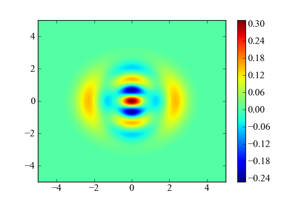
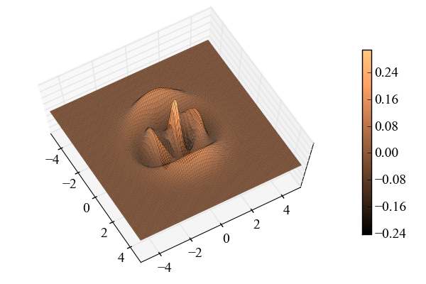

Simple Wigner distribution of a linear combination of Fock states¶
Wigner distribution of linear combination of Fock states
from qutip import *
from mpl_toolkits.mplot3d import Axes3D
from matplotlib import cm
from pylab import *
x=(basis(10,4) + basis(10,2)).unit()
xvec=linspace(-5,5,100)
yvec=xvec
W=wigner(x,xvec,yvec)
X,Y = meshgrid(xvec, yvec)
fig=figure(figsize=(6, 4))
contourf(X, Y, W,100)
colorbar()
savefig('examples-wigner-2D.png')
close(fig)
fig = figure(figsize=(6, 4))
ax = Axes3D(fig,azim=-30,elev=73)
surf=ax.plot_surface(X, Y, W, rstride=1, cstride=1, cmap=cm.copper, alpha=1,linewidth=0.1)
ax.set_zlim3d(-0.2,0.2)
#remove z-axis tick labels
for a in ax.w_zaxis.get_ticklines()+ax.w_zaxis.get_ticklabels():
a.set_visible(False)
fig.colorbar(surf,shrink=0.65,aspect=20)
savefig('examples-wigner-3D.png')
close(fig)

